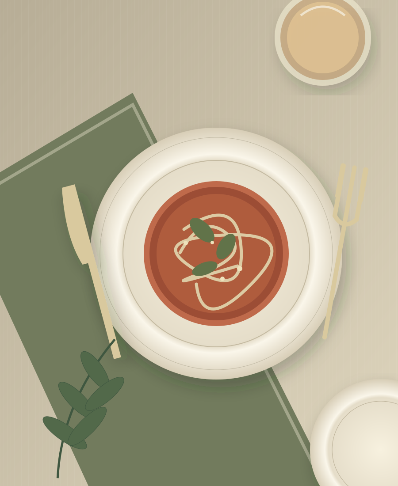

HONG KONG · KENNEDY TOWN
A place for
good food.
And connection.
Food brings people together.
Let’s start with a conversation.
CATERING GROUP LIMITED↓

the table.
01 / OUR PERSPECTIVE
Every conversation
starts with
a welcome.
A Hong Kong catering group.
A shared appreciation for the moments that bring us together.
MS YAO KITCHEN CATERING GROUP LIMITED is based in Kennedy Town, Hong Kong. This is our home for catering enquiries and business conversations.
Whether you have an occasion in mind or an idea to share, tell us what you are looking for. We welcome the opportunity to discuss the details with you.
Find the right conversation ↗02 / LET’S TALK
What brings you
to our table?
Start with your idea.
We’ll take the conversation from there.
Catering enquiries
Share your proposed date, location, guest numbers and dining preferences so we can discuss your request.
↗02Business conversations
Have a collaboration or supply proposal? Introduce your business and tell us about the opportunity.
↗03Something else?
For company information and other questions, reach out directly to our team.
↗Please contact us to discuss availability, scope and arrangements. Sending an enquiry does not confirm a booking.
A SIMPLE INVITATION
Good food opens the door.
Good conversation keeps it open.
03 / GET IN TOUCH
Let’s make
a connection.
For catering enquiries and business correspondence,
contact us by email or phone.
Kennedy Town, Hong Kong